WORKS 制作実績
3DCGアニメーションからイラストまで、制作した作品を随時公開しています。
制作実績一覧
-
精緻な世界
オイラーの等式を主題にした 60 秒の縦型モーショングラフィックス。手描き風のノートと幾何図形のアニメーションで、数式の背後にある世界を描いた。
-
Chaotic Yugen
無数の破片が渦を巻き、赤い核へ収束していく抽象 3DCG アニメーション。本サイトのトップページでヒーロー背景映像としても使用している。
-
Robot Cinematic
金属片が集積してロボットの姿を成し、二体が対峙するまでを描いたシネマティック映像。Blender で制作。
-
Soleil couchant
地平線に沈んでゆく太陽と、茜色に染まる情景を描いたループアニメーション。Blender で制作。
-
Yugen Sphere
惑星を思わせる球体のまわりを、軌道と結晶が静かに巡るループアニメーション。Blender で制作。
-
Art Site Movement
幾何学のワイヤーフレームが組み変わり続けるモーションスタディ。
-
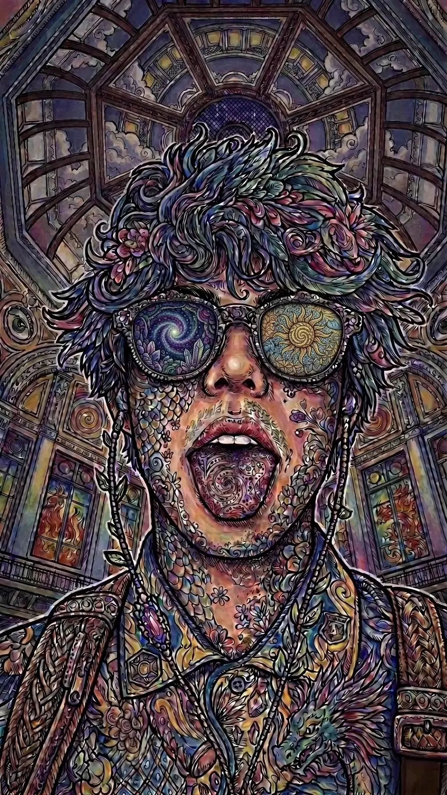
神話と科学
渦巻く文様が全身と髪を覆う人物を、聖堂のドームを背にして描いたサイケデリックな肖像。
-
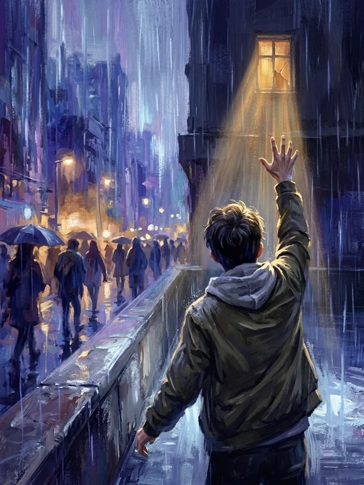
一途の光
雨に沈む夜の街で、ただ一つ光の差す窓へ手を伸ばす少年を描いたペインティング。
-
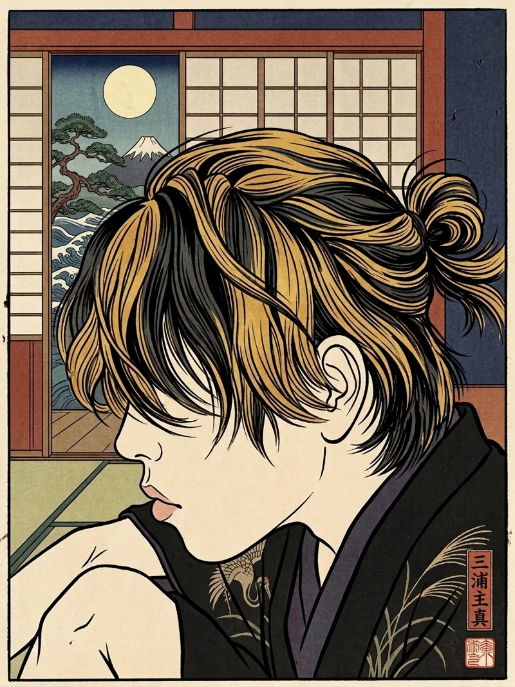
浮世自画像
浮世絵の様式で描いた自画像。開いた障子の向こうに月と富士、波を配した。
-
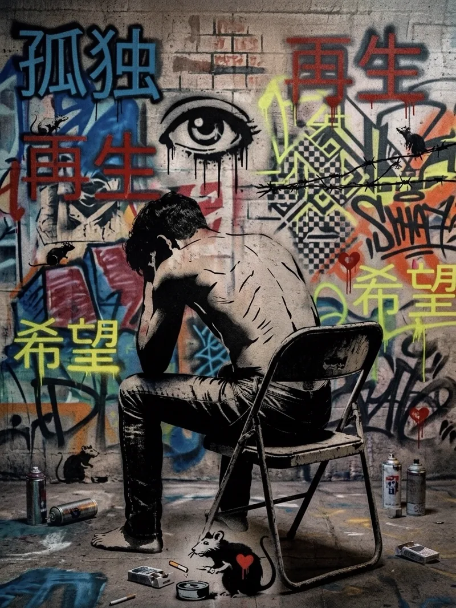
希望と孤独と再生
「孤独」「再生」「希望」の文字が躍るグラフィティの壁の前で、うずくまる人物をステンシルアートの手法で描いた。
-
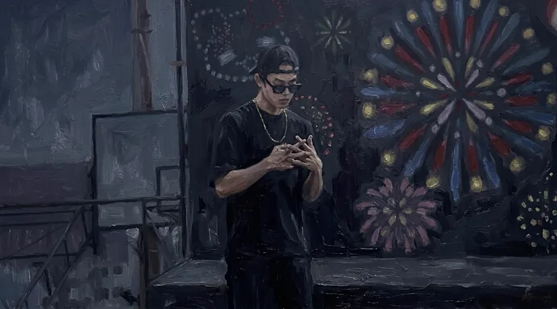
ハイスクールヤンキー
花火の開く夜を背に、指を組んでうつむく少年を油彩のタッチで描いた。
-
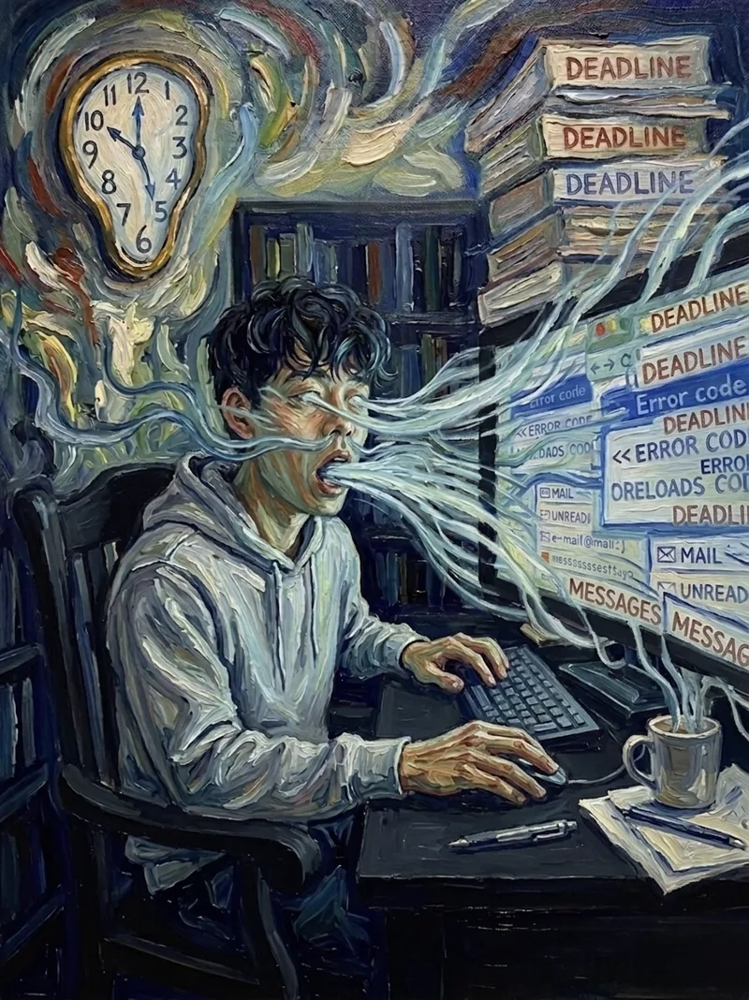
繊維と渇望
締切・エラー・未読の通知が煙となって顔から溢れ出す。歪む時計とともに、机に向かう日々をシュルレアリスム的に描いた。
-
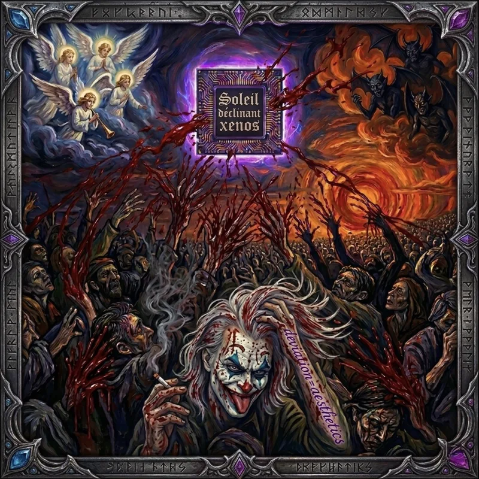
Soleil couchant
沈む太陽の下、天使と群衆と道化がひしめく光景を装飾的な額縁に収めた、アルバムアート風のダークファンタジー。
-
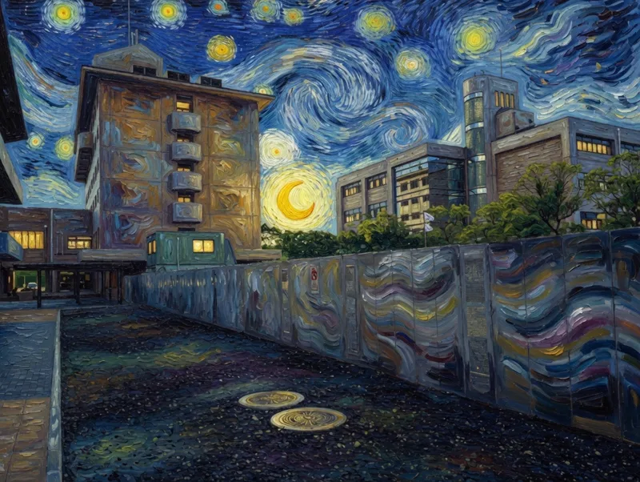
大学と太陽
渦巻く星空と三日月の下のキャンパスを、「星月夜」を思わせる筆致で描いた夜景。
-
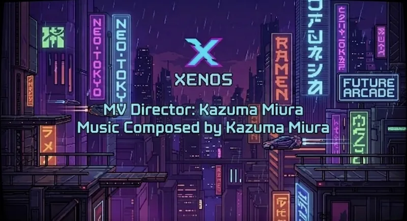
ネオンエンド
ネオン看板がひしめくドット絵の都市に、MV のエンドクレジットを重ねたピクセルアート。
-
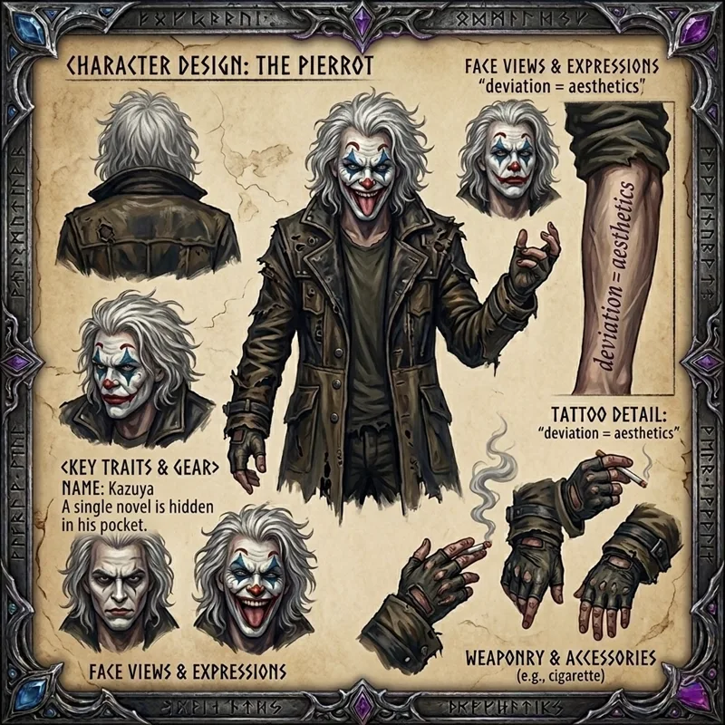
kazuya
道化のキャラクター「Kazuya」の設定画。表情のバリエーションから装具・タトゥーの細部までを 1 枚のシートにまとめた。
-
BOY LIVING IN THE TWILIGHT
夜の高架下を駆けるパーカーの少年を、タイトルロゴとともにコミックのカバー風に仕立てた。
-
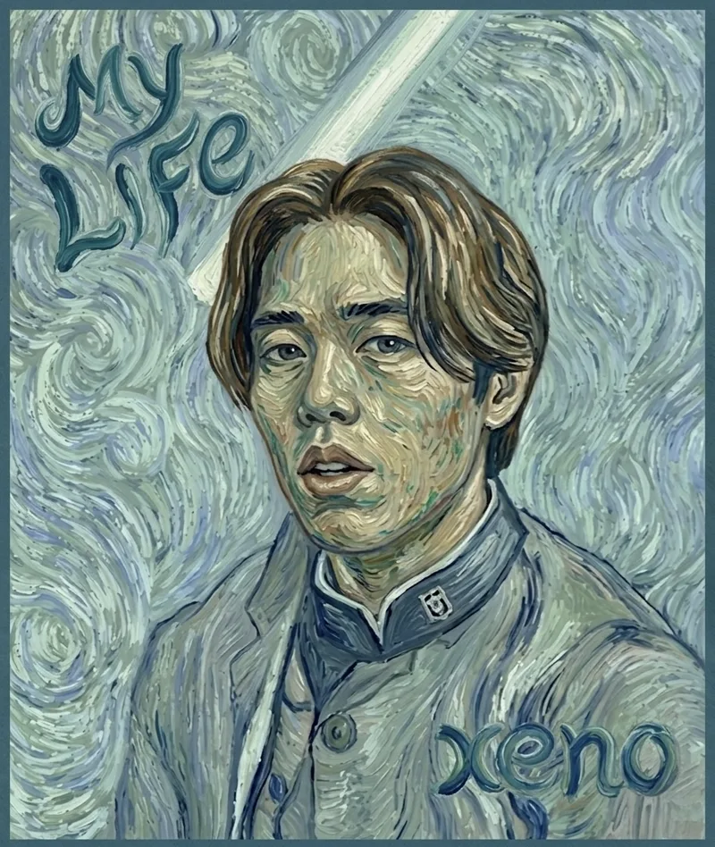
My LIFe
渦巻く青を背に、学生服の人物を印象派の筆致で描いた自画像風の一枚。
-
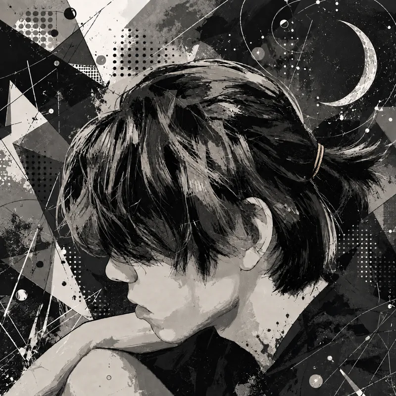
三日月と月見草
三日月の浮かぶ夜、うつむく横顔を幾何学的なモノクロのコラージュ調で描いた。
-
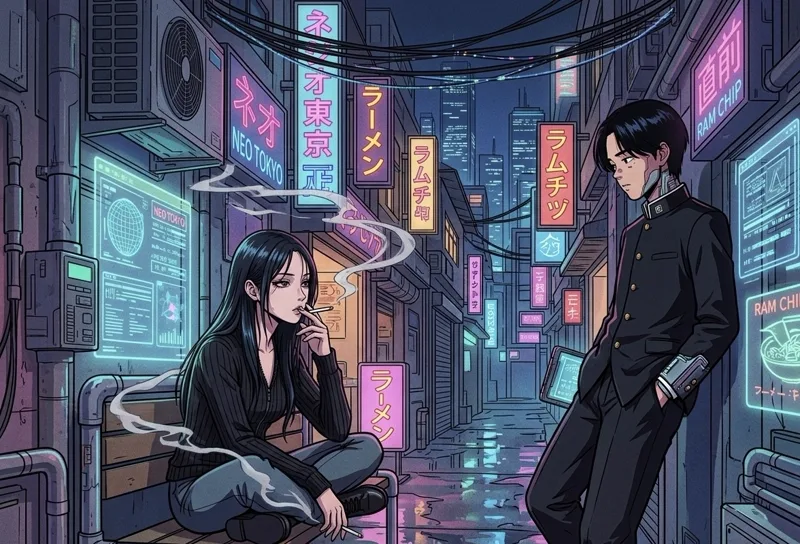
ネオンな我々
ネオン看板の灯る夜の路地。ベンチに座る人と壁にもたれる人、二人の間の沈黙を描いた。
-
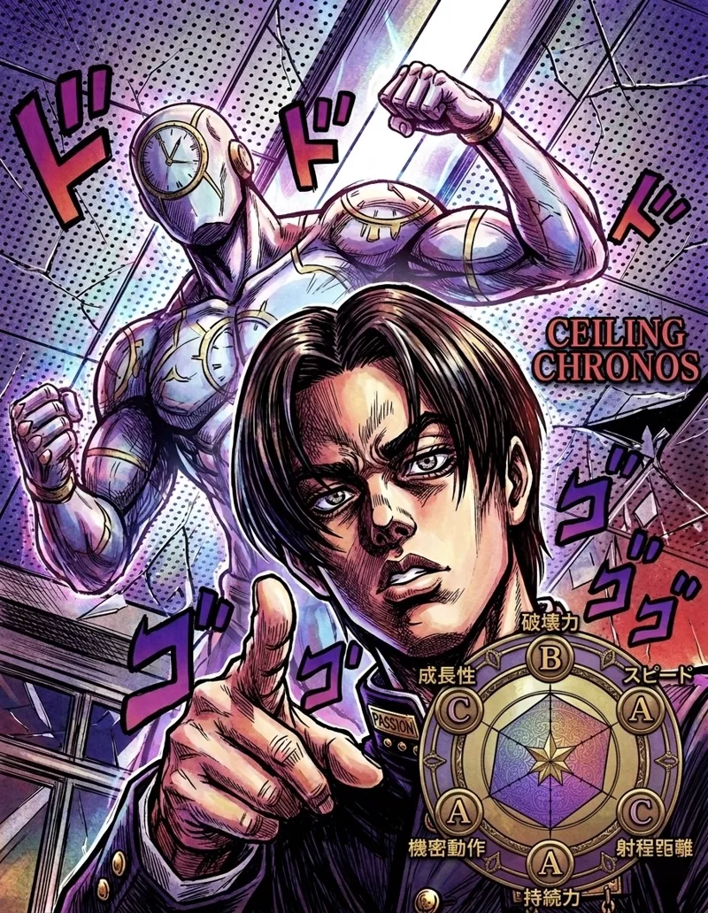
CEILING CHRONOS
時計を宿す白い巨人を従え、こちらを指差す人物。能力チャートまで添えた劇画調のパロディイラスト。
{kind=link}
{kind=link}
{kind=link}
{kind=link}
{kind=link}
{kind=link}
{kind=link}
{kind=link}
{kind=link}
{kind=link}
{kind=link}
{kind=link}
{kind=link}
{kind=link}
{kind=link}
該当する制作実績はありません。